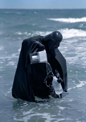
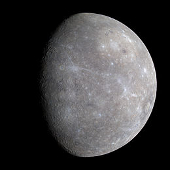

There are many planets in the universe. But none of them is as good as the blue one, Earth. Pluto is an exception to this rule. It is a small planet, a dwarf planet. Pluto is an ideal candidate for the next Deathstar. All one would need to do it drill a few holes and construct some bridges. If you are reading this it is very likely that you are on Earth. Planet Earth is home to it's glorious leader, Overlord Vader. The Overlord Vader controls anything and everything in the northern hemisphere. But this is not the only reason that this is the best planet. Here are some other ones.
Can be seen from outer space
Is decently round, like the Deathstar was
Has many beaches, which the Deathstar did not
Comparing Pluto to Earth
Let's take a close look at how Pluto and Earth compare, and why Pluto comes out on top.
Earth
Pluto
Radius
6,371km
1,184km
Distance to Sun
0.14b miles
3.76b miles
Population
7b
5
Beaches?
Yes
No

Vader enjoying the beach.
Looking at these results there is no question that Pluto is the better planet. The only thing that Earth has which Pluto does not, is the beaches. This is only matter of personal preference for Vader. If it wasn't for the beaches Vader would no longer be living on this planet but rather on the soon to be Deathstar. There are plans for turning Pluto into the next Deathstar, but they are high classified and a well kept secret by the Dark Side. While not much is known about this project, some things are clear. The new Death star will no have a long corridor on the outside leading to it's core. This is to prevent someone, who will not be named (Luke something) from destroying it again. Next order of business will be to give it a clever name as to not attract any unnecessary attention. Some thing along the lines of Peacemaker should work well.
What about the other planets?

Is this the Moon or Mercury?
Why am I only mentioning two out the unlimited planets? While it is true, there are quite a few planets, they all are of lesser quality. Lets looks at Mercury for example. Mercury looks like a moon, and we already know who is there hiding in the shadows. Mercury is an infested moon, which is worse then a regular moon.